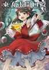

- Welcome to Touhou Wiki!
- Please register to edit. For assistance, check in with our Discord server or IRC channel.
File:ThGKCover.jpg
Jump to navigation
Jump to search


Size of this preview: 423 × 600 pixels. Other resolutions: 169 × 240 pixels | 1,806 × 2,560 pixels.
{kind=link}
Original file (1,806 × 2,560 pixels, file size: 578 KB, MIME type: image/jpeg)
Summary[edit]
{kind=link}
Cover for Symposium of Post-mysticism.
Licensing[edit]
{kind=link}
This image is of book cover(s), and the copyright for it is most likely owned either by the artist who created the cover(s) or the publisher of the book(s). It is believed that the use of low-resolution images of book covers
qualifies as fair use under the Copyright law of the United States. Other use of this image, on Touhou Wiki or elsewhere, might be copyright infringement. |
File history
Click on a date/time to view the file as it appeared at that time.
| Date/Time | Thumbnail | Dimensions | User | Comment | |
|---|---|---|---|---|---|
| current | 14:40, 11 September 2015 |  | 1,806 × 2,560 (578 KB) | Plubio (talk | contribs) | Better quality |
| 16:31, 1 May 2012 |  | 1,213 × 1,694 (452 KB) | Quwanti (talk | contribs) | category:Symposium of Post-mysticism category:Print Work Covers | |
| 02:06, 14 February 2012 |  | 500 × 500 (96 KB) | KyoriAsh (talk | contribs) | 东方求闻口授 封面图 分类:书籍封面 |
- You cannot overwrite this file.
File usage
More than 100 pages use this file. The following list shows the first 100 pages that use this file only. A full list is available.
{kind=link}
- Bohemian Archive in Japanese Red
- Cage in Lunatic Runagate
- Changeability of Strange Dream/Story
- Curiosities of Lotus Asia
- Curiosities of Lotus Asia/Aphorism
- Curiosities of Lotus Asia/Chapter 05
- Curiosities of Lotus Asia/Chapter 18
- Curiosities of Lotus Asia/Chapter 25
- Dolls in Pseudo Paradise/Story
- Eastern and Little Nature Deity
- Fairy Wars/Spell Cards/Stage B-1
- Fiction by ZUN
- Ghostly Field Club/Story
- Imperishable Night/Spell Cards
- Inaba of the Moon and Inaba of the Earth
- List by Song/Fairy Wars
- Magical Astronomy/Story
- Mountain of Faith/Spell Cards/Stage 6
- Official Literature
- Oriental Sacred Place
- Perfect Cherry Blossom/Characters
- Perfect Memento in Strict Sense
- Perfect Memento in Strict Sense/Yama
- Reimu Hakurei
- Retrospective 53 minutes/Story
- Seasonal Dream Vision
- Silent Sinner in Blue
- Strange and Bright Nature Deity
- Symposium of Post-mysticism
- Symposium of Post-mysticism/Aphorism
- Symposium of Post-mysticism/Bunbunmaru Newspaper 1
- Symposium of Post-mysticism/Bunbunmaru Newspaper 2
- Symposium of Post-mysticism/Bunbunmaru Newspaper 3
- Symposium of Post-mysticism/Bunbunmaru Newspaper 4
- Symposium of Post-mysticism/Byakuren Hijiri
- Symposium of Post-mysticism/Hina Kagiyama
- Symposium of Post-mysticism/Ichirin Kumoi & Unzan
- Symposium of Post-mysticism/Interview
- Symposium of Post-mysticism/Kakashi Spirit News 1
- Symposium of Post-mysticism/Kakashi Spirit News 2
- Symposium of Post-mysticism/Kanako Yasaka
- Symposium of Post-mysticism/Kogasa Tatara
- Symposium of Post-mysticism/Koishi Komeiji
- Symposium of Post-mysticism/Kyouko Kasodani
- Symposium of Post-mysticism/Mamizou Futatsuiwa
- Symposium of Post-mysticism/Minamitsu Murasa
- Symposium of Post-mysticism/Minoriko Aki
- Symposium of Post-mysticism/Mononobe no Futo
- Symposium of Post-mysticism/Nazrin
- Symposium of Post-mysticism/Nitori Kawashiro
- Symposium of Post-mysticism/Nue Houjuu
- Symposium of Post-mysticism/Parsee Mizuhashi
- Symposium of Post-mysticism/Part 1
- Symposium of Post-mysticism/Part 2
- Symposium of Post-mysticism/Part 3
- Symposium of Post-mysticism/Part 4
- Symposium of Post-mysticism/Part 5
- Symposium of Post-mysticism/Part 6
- Symposium of Post-mysticism/Rin Kaenbyou
- Symposium of Post-mysticism/Sanae Kochiya
- Symposium of Post-mysticism/Satori Komeiji
- Symposium of Post-mysticism/Seiga Kaku
- Symposium of Post-mysticism/Shizuha Aki
- Symposium of Post-mysticism/Shou Toramaru
- Symposium of Post-mysticism/Soga no Tojiko
- Symposium of Post-mysticism/Suwako Moriya
- Symposium of Post-mysticism/Toyosatomimi no Miko
- Symposium of Post-mysticism/Utsuho Reiuji
- Symposium of Post-mysticism/Yamame Kurodani
- Symposium of Post-mysticism/Yoshika Miyako
- Symposium of Post-mysticism/Yuugi Hoshiguma
- Synth Sound Symphony
- The Grimoire of Marisa
- Touhou Angband:object.txt
- Touhou Bougetsushou
- VISION Phantom Magic/Gameplay
- Wild and Horned Hermit
- 円盤満作祭
- 東方バイオリン8
- User talk:Kiefmaster99
- File:059.jpg
- File:060.jpg
- File:061.jpg
- File:062.jpg
- File:063.jpg
- File:064.jpg
- File:084.jpg
- File:FAR EAST OF EAST Cover.jpg
- File:FOCD-0019.jpg
- File:FPR0008.jpg
- File:Fhmjacket.jpg
- File:GCFT-0043.jpg
- File:IO-0169.jpg
- File:RSCD-0005.jpg
- File:RTScover.jpg
- File:STCD-0021.jpg
- File:Th7 ud Austin-SakuyaB.rpy
- File:Th8 udti03.rpy
- File:YZCD-0012.jpg
- Template:Navbox Print Works
{kind=link}
{kind=link}
{kind=link}
{kind=link}
{kind=link}
{kind=link}
{kind=link}
{kind=link}
{kind=link}
{kind=link}
{kind=link}
{kind=link}
{kind=link}
{kind=link}
{kind=link}
{kind=link}
{kind=link}
{kind=link}